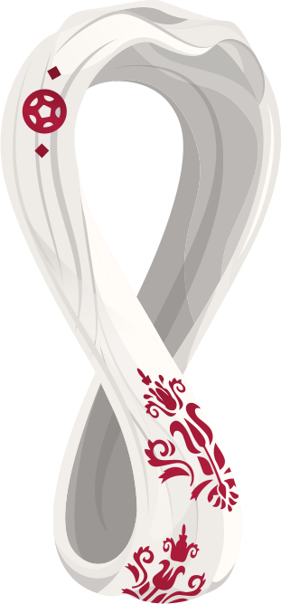

Final
Terceiro Lugar
Semifinais
Quartas de Final
Oitavas de Final
Classificação
Grupo
| # | Seleção | PG | J | T | E | D | GP | GC | SG |
|---|---|---|---|---|---|---|---|---|---|
SIGLAS: PG: pontos ganhos| J: jogos| T: triunfos| E: empates| D: derrotas| GP: gols pró| GC: gols contra| SG: saldo de gols
Tabela da copa 2002
| Dia | Data | Hora | Grupo | Jogo | Local |
|---|